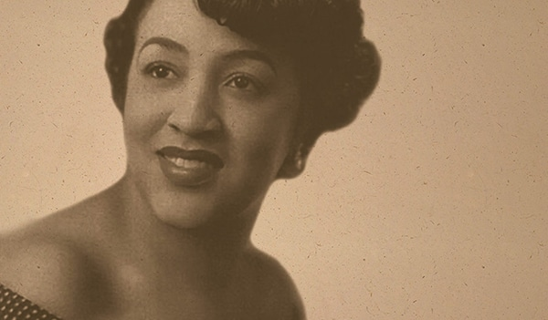

Mary Kenner

Mary Beatrice Davidson Kenner foi uma inventora afro-americana cuja criatividade e engenhosidade resultaram em diversas inovações que melhoraram a vida cotidiana das pessoas. Ela ficou mais conhecida por desenvolver um **absorvente feminino com suporte de fixação**, que trouxe maior conforto e segurança para as mulheres. No entanto, devido ao racismo institucionalizado da época, sua patente foi inicialmente recusada por empresas que não queriam associar produtos femininos a uma inventora negra.
Além disso, Mary registrou várias outras patentes, incluindo um suporte ajustável para papel higiênico, uma bandeja para andadores que facilitava a mobilidade de idosos e pessoas com deficiência e um abridor de portas à prova d’água. Apesar de nunca ter lucrado muito com suas invenções, suas contribuições continuam a influenciar inovações modernas.
Principais Contribuições
- Criação do absorvente feminino com suporte de fixação, melhorando a higiene menstrual.
- Desenvolvimento de um suporte ajustável para papel higiênico, facilitando o acesso em diferentes alturas.
- Invenção de uma bandeja acoplável para andadores, proporcionando maior autonomia a pessoas com mobilidade reduzida.
- Registro de mais de cinco patentes ao longo de sua vida.
- Superação da discriminação racial para deixar um legado de inovação e acessibilidade.
Saiba mais
Voltar